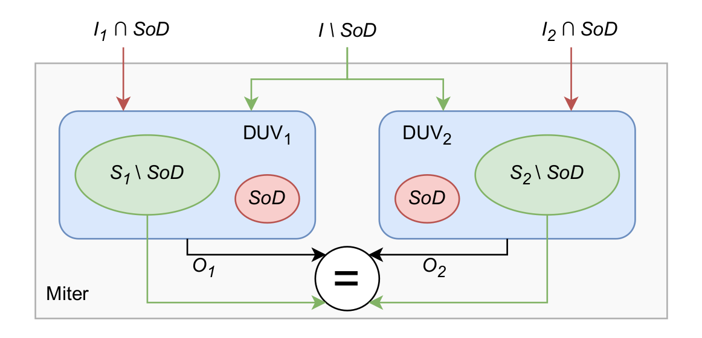
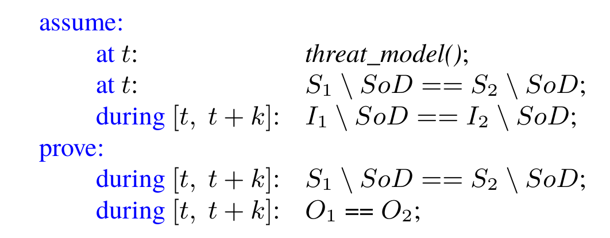

Unique Program Execution Checking
Unique Program Execution Checking (UPEC) is a verification methodology designed to assess the security of programs in the presence of confidential information, commonly referred to as "secrets." At its core, UPEC aims to determine whether the execution of a program remains invariant despite the presence of such secrets. This is formalized through the concept of unique program execution, which asserts that a program's behavior must not depend on the secret value across all execution cycles. To achieve this, UPEC constructs a tailored miter model where two instances of a CPU execute the same program under identical conditions, except for one protected memory location that contains the secret. By examining variations in execution behavior at the microarchitectural level—known as the "microarchitectural footprint"—UPEC identifies potential vulnerabilities that could arise from secret-dependent variations, which may not be evident at the instruction set architecture (ISA) level. This comprehensive approach allows for the verification of security properties in complex out-of-order processors, ensuring that sensitive information remains secure throughout program execution..
Methodology
Given an RTL design, UPEC can exhaustively detect and track every possible propagation of confidential information or malicious interference, without augmenting source code or explicitly labelling the signals. This is made possible by the underlying computational model calles "miter".
Computational Model
The miter consists of two identical instances of the design under verification (DUV), where each instance models an execution trace of the DUV. Every logic signal in the DUV is initialized to an arbitrary value which is, however, constrained to be the same in both DUV instances in the miter. The only unconstrained signals are contained in a defined set of state-holding signals and inputs, called the Source of Discrepancy (SoD). The miter allows us to model the propagation of information from the SoD to any signal in the DUV by comparing the two execution traces. The SoD is selected depending on the threat model. If confidentiality of data is being verified, the SoD consists of signals holding private data, e.g., a protected memory region. Alternatively, if system integrity is the verification target, then the SoD comprises the signals in an untrusted HW component. UPEC determines whether such an IP can interfere with the protected state of the system by detecting a malicious propagation from the SoD.
Generic UPEC Property
We formulate a generic UPEC property which assumes that, at timepoint t, all state-holding signals S of the DUV have the same values in both instances, except for the SoD. Similarly, all inputs I not in the SoD are constrained to be equal for the time window [t, t + k]. Depending on the application, it may be necessary to specify additional assumptions, e.g., an unprivileged user or a configured protection mechanism. This is represented by the threat_model() macro. The property then verifies that, for the given time window [t, t + k], there is no new deviation of the remaining state-holding signals or the outputs O. Since the SoD represents the only difference in the system, every counterexample must originate from this set. The UPEC property does not depend on the functional correctness of the DUV, since it merely analyzes equivalence between the two instances. Abstracting from the functional correctness of the DUV contributes greatly to the scalability of the method. In addition, UPEC is based on Interval Property Checking (IPC) which makes it possible to handle long propagation paths. In IPC, proofs do not start from the reset state of the DUV, but from any arbitrary state, called symbolic initial state. This allows us to implicitly model any history of the DUV, such as mistraining branch predictors by an attacker. Effectively, the symbolic initial state “fast-forwards” the starting state of the UPEC property to the point in time at which the propagation starts. With every true counterexample to the UPEC property, the SoD can be refined by adding the affected signals to it. Repeating this iteratively increases the number of signals in the SoD until a fixed point is reached, where no new propagation is possible. If any of the found information flows violates the targeted security policy, the verification engineer can inspect the corresponding counterexample to find the root cause and decide on an appropriate mitigation.
Case Studies
Transient Execution Side Channels
Exposed issues in speculative execution that allowed leakage of secret data due to mispredicted hardware paths.
UPEC identified these risks by checking for speculative behavior at the microarchitectural level, safeguarding sensitive data.
Timing Side Channels
Detected timing-based vulnerabilities where certain memory access timings could reveal confidential data.
Further analysis revealed timing discrepancies in specific memory access, potentially leaking information to unauthorized observers.
Functional Security Bugs in SoCs
Found weaknesses in Physical Memory Protection (PMP) that allowed unauthorized access to protected memory regions.
UPEC demonstrated these access control vulnerabilities, providing insights for improving security in several processor cores.
Operation Integrity in SoCs
We were able to detect a Denial-of-Service attack using an untrusted IP in OpenTitan
Access control issues were identified, revealing the need for stricter enforcement in complex SoC designs.